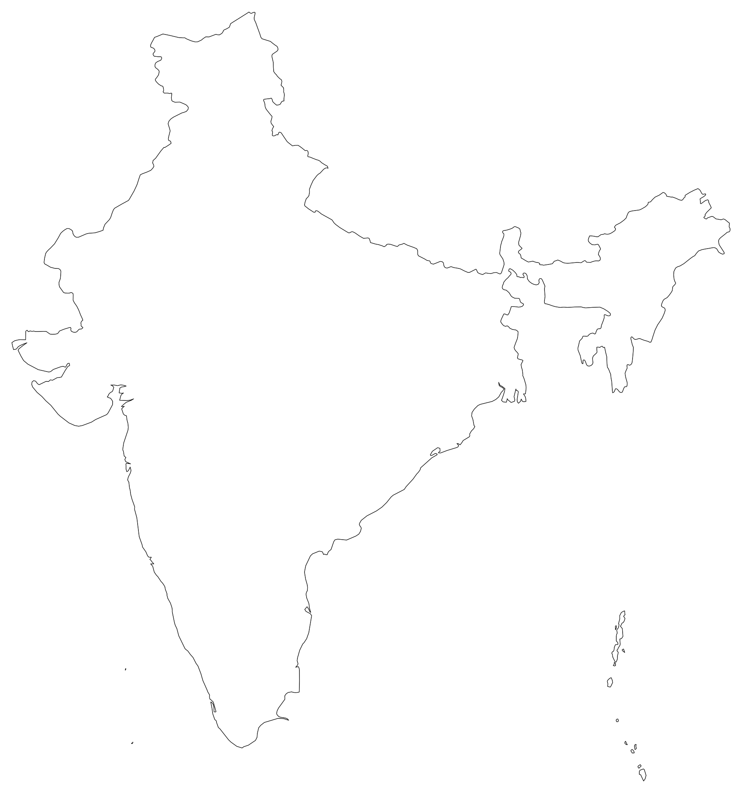

Our Process
Glaubark’s journey is rooted in a single belief, that farmers should not be left out of the global climate finance movement. They should be at the centre of it.
What We Do
End-to-end carbon
project development
From baseline assessment to carbon credit issuance, Glaubark handles the full cycle — so farmers and partners focus on farming, not paperwork.
Project design, baseline assessment, and VCS project support
Farmer onboarding, stakeholder consultation, and capacity building
Field surveys, multilingual data collection, and digital monitoring
Satellite monitoring, remote sensing, and GIS mapping
Transparent MRV systems, validation, and third-party verification
Voluntary carbon market access and credit issuance support
Farming Practices
Practical interventions, measurable outcomes
Our work focuses on farmer-friendly practices that improve productivity, soil fertility, and sustainability — while generating verified emission reductions.
Crop Residue Management
Drip Irrigation
Reduced Tillage
Biodiversity Enhancement
Crop Rotation
Intercropping
Improved Crop Nutrition
Organic Inputs
Cover Cropping


Who We Work With
A broad ecosystem of partners
Glaubark brings together farmers, institutions, and technology to scale impact.
-
Farmers
Direct participants who adopt regenerative practices and earn from verified carbon outcomes on their own land.
-
NGOs
On-the-ground partners who bring trust, local knowledge, and community reach to every project we run.
-
Corporates
Businesses funding high-integrity carbon credits and CSR-aligned rural development initiatives.
-
Sugar Factories
Anchor institutions in Maharashtra’s cane belt that help us reach thousands of farmers through existing supply chains.
-
Institutional Partners
Government bodies and research institutions supporting policy alignment and technical credibility.
-
Farmer Producer Orgs
Farmer collectives that streamline onboarding, training, and data collection at the grassroots level.
-
AI & Precision Ag Companies
Technology partners whose remote sensing and precision agriculture tools power our MRV systems.
Where We Operate
Rooted in Maharashtra, expanding across India
Our primary focus is Maharashtra’s agricultural districts, with active operations across three states through partnerships with AI farming and precision agriculture companies.
